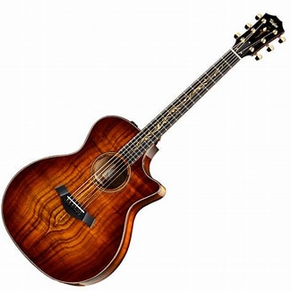

.png)
Guitar
It
Immerse yourself in the world of the guitar and let yourself be carried away by its melody and its wonders
Biography and history of the guitar

The guitar's history is a captivating narrative spanning centuries and cultures, marked by creativity and innovation. Originating in medieval Europe, it drew inspiration from ancient plucked string instruments. Craftsmen in 14th century Spain laid the groundwork for the modern guitar. The classical guitar flourished in the 18th and 19th centuries, notably with Antonio de Torres Jurado's innovations. Across time, the guitar has evolved through cultural exchanges, shaping diverse styles like flamenco and bossa nova. Today, it remains a global fascination, resonating in blues clubs, concert halls, and parties worldwide, uniting people through the enchantment of music.
Different type of guitar
.jpg)
The classical guitar, also known as the Spanish guitar, is the most popular among the three types of guitars. It features a hollow body with an opening that enhances resonance when strummed or plucked. Typically equipped with six nylon strings, it offers a softer touch compared to steel strings, making it easier to play. Traditionally, it is played with fingers rather than a pick and does not require amplification, though amplifiers or sound systems can be used. Classical guitars find prominence in classical, Latin, and flamenco music genres.
The acoustic guitar bears resemblance to the classical guitar in shape and appearance and typically doesn't require amplification. However, it differs in its use of steel strings, producing a more robust sound. Constructed with heavier woods like spruce, maple, and mahogany, it can withstand the tension of steel strings. Primarily utilized in folk, blues, country, and rock genres, the acoustic guitar offers versatility across various musical styles.
.jpg)
The bass guitar is a vital element across various music genres, renowned for its deep, resonant tones and pivotal role in establishing rhythm and harmony. Typically equipped with four strings and a longer neck than a standard guitar, it enables lower pitches. Found in rock, jazz, funk, and more, bass guitars lay the groundwork for other instruments. Bassists employ techniques like fingerstyle or slap bass to craft distinctive grooves and rhythms. With its commanding presence, the bass guitar drives the momentum of songs, contributing to memorable and dynamic musical compositions.
The electric guitar, a modern musical marvel, relies on electronic amplification for sound production. Featuring a solid body and pickups, it converts string vibrations into electrical signals, which are then amplified for volume and tone control. Renowned for its versatility, electric guitars span genres like rock, blues, and jazz, offering a wide sonic range from clean to distorted tones. These instruments have left an indelible mark on music history, empowering musicians to experiment and innovate while captivating audiences worldwide with their electrifying presence.


The folk guitar, deeply ingrained in diverse cultures and musical traditions, is celebrated for its versatility. Featuring a hollow body and steel strings, it produces rich, resonant tones. Accessible to beginners yet appealing to seasoned musicians for its expressive capabilities, the folk guitar accompanies various genres including blues, country, and traditional folk music. Whether used for rhythmic strumming or intricate fingerpicking, folk guitars bring people together from campfires to concert halls, speaking a universal language of melody and harmony.
Some pieces of advice
First of all, here is the most important tip: WHEN TALKING ABOUT MUSIC, YOU HAVE TO USE EAR
1. You've got to have a guitar.
2. Explore different genres to broaden your musical horizons.
3.
You must love the guitar.
4. Experiment with various techniques like fingerstyle, picking, and
strumming.
5. Always enjoy playing it.
6. Focus on developing a good sense of rhythm and
timing.
7. Always have the urge to learn new songs and theories.
8. Record yourself playing to
track your progress and identify areas for improvement.
9. Practice at least 1 hour a day.
10.
Invest in quality equipment and maintain your guitar regularly.
11. Take clue and advice from the pro
guitarists you know.
12. Attend live performances and concerts to get inspired and learn from other
musicians.
13. Go to studios with friends and share with each other what each of you knows.
14.
Join a band or ensemble to experience the joy of playing music with others.
15. Stay patient and
persistent, as mastering the guitar takes time and dedication.
Some accessories for guitar
.jpg)
A mediator, also known as a pick, is a small tool used to pluck or strum the strings of a guitar, providing a sharper attack and different tone compared to fingerpicking.
.jpg)
A capodastre, or capo, is a device used on the neck of a guitar to shorten the playable length of the strings, allowing the player to change the pitch of the instrument without altering the tuning.
.jpg)
A tuner, is a device used to adjust the pitch of the strings on a guitar to their proper frequencies. It ensures accurate tuning for optimal sound quality and performance.
.jpg)
A metronome is a device that produces regular, audible ticks or beats at a consistent tempo. It helps musicians maintain timing and rhythm during practice and performance.